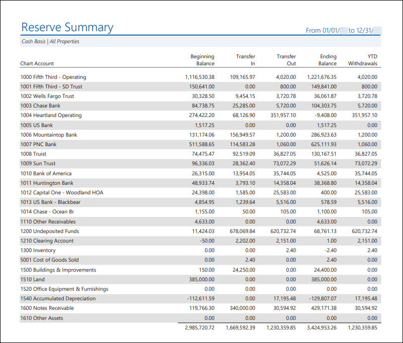
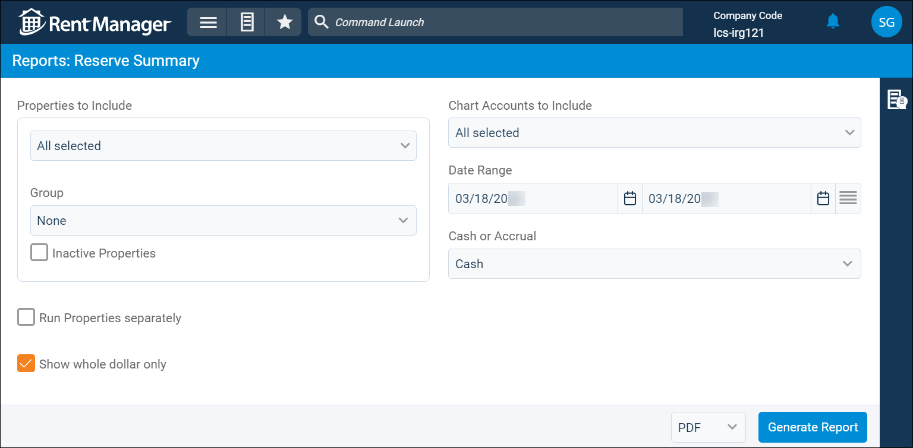

Source: https://rmxhelp.rentmanager.com/Topics/Express/Other/Reports/Reserve-Summary.htm
Reserve Summary (Report)
The Reserve Summary report displays information about your general ledger (GL) account balances and the funds going in and out of these accounts over a specified date range. It also displays the amount of withdrawals made to each account for the current year to today's date. You can select which GL accounts to include in the report and generate it on a cash or accrual basis. This report provides you with a broad overview of your financial data and activity so you can more easily spot patterns or suspicious activity at a glance.
More Information
The GL start date is considered the financial start date, so any transactions or information dated before the GL start date are not included in the report results.
Related Privileges
| Group | Privilege | Column |
|---|---|---|
| Letter/Email Templates/Reports/Packets | Run reports | Enabled |
Additionally, on the Reports tab, you must have access to Reserve Summary.
For more information, refer to Control User Access.
To view the Reserve Summary report, do the following:
-
Go to
 arrow_forward Financial Statements arrow_forward General arrow_forward Reserve Summary.
arrow_forward Financial Statements arrow_forward General arrow_forward Reserve Summary.
The Reports: Reserve Summary page displays. -
Adjust the report options as desired. Each option is described below.
-
Generate the report in your desired file format(s).
Related Preferences
Reports may look different depending on whether or not the Use modernized report style system preference is enabled. For more information, refer to General Report Options (System Preferences).

Report Options
The report options described below determine what data displays in the report.

Properties to Include
Select each property or a property Group to be included in the report.
More Information
This field populates only with the properties to which you have access. Your access to properties can be managed from your user account or on the property's details page. For more information, refer to Limit Access to a Property.
Optionally, check Show Inactive Properties to include properties that are no longer active.
Run Properties Separately
Check to generate a separate report for each selected property. Otherwise, all selected properties are combined into a single report.
Show Whole Dollar Only
If checked, general ledger account totals are rounded to the nearest whole dollar (0–49 cents is rounded down, and 50–99 cents is rounded up). Otherwise, the actual amount displays.
Chart Accounts to Include
The report displays the balances of transaction activity for up to eight of the selected general ledger (GL) accounts.
In addition to manually selecting GL accounts, you can use the following options to filter and select the accounts. The list of GL accounts updates depending on the options selected here.
| Option | Description |
|---|---|
|
Mapping |
Select the name of the desired mapping method to customize the display of GL accounts included in the report by using the virtual accounts of a chart mapping. For more information, refer to Chart Accounts Mapping (Page). If no chart account mappings are created, the drop-down list displays None. |
|
From Account |
To set a range of GL accounts, select the first account in your range from the drop-down list. All accounts between and including the From Account and To Account are checked in the list. |
|
To Account |
To set a range of GL accounts, select the last account in your range from the drop-down list. All accounts between and including the From Account and To Account are checked in the list. |
|
Group |
Select a GL account type group from the drop-down list to quickly select all accounts of that type. For example, selecting Bank checks all the banks in the list. |
Date Range
Enter or select the date range to determine the data that displays in the report.
To the right of the Date Range option, you can click Date to manually select a date range, or Period select a date range based on accounting periods.
Set a Date Range
In the Date Range section, set the From and To dates for which the report should examine data.
These fields automatically populate with today’s date. Enter a different date or select a date from the calendar. Alternatively, adjust the dates using the available preset buttons or click  to open more options for setting a date range.
to open more options for setting a date range.
Select an Accounting Period
Related Preferences
To generate the report using accounting periods, the General Ledger Settings (System Preferences) option to Enable accounting periods must be enabled.
Financial reports default to the manual Date view unless the General Ledger Settings (System Preferences) option to Default to accounting periods for financial reports is checked. Enabling this option sets the financial reports to default to the Period view for Date Range.
Configure the following options to determine the period Date Range uses:
| Option | Description |
|---|---|
|
Series |
Select the desired series, as defined in accounting periods. |
|
Single Period |
Select Single Period to generate the report for one accounting period. When this option is selected, you can also select the Year of the period you wish to use and the Period, which allows you to generate the report from the period's Start Date through the period's End Date. |
|
Multiple Periods |
Select Multiple Periods to generate the report across multiple accounting periods. When this option is selected, you can also select a Start Year and End Year or a Start Period and End Period to determine the To and From date for which the report is generated. |
Cash or Accrual
This option determines whether the financial activity is calculated on a cash or accrual basis.
| Option | Description |
|---|---|
|
Accrual |
Includes all transactions for which income was earned and expenses were incurred, regardless of whether the payment was received or disbursed. |
|
Cash |
Includes only transactions for which payments are received or made. |
Report Results
The report results are described below including, if applicable, section, column, and subreport descriptions.
Report Header
The report header displays the report name and key information selected in the report options, such as date information and which properties were examined in the report.
Column Descriptions
The columns that display in the report are described below.
| Column | Description |
|---|---|
|
Chart Account |
The account number and full name of the general ledger (GL) account being examined. |
|
Beginning Balance |
The dollar amount in the GL account as of the starting date selected in the Date Range report option. |
|
Transfer In |
The amount of money deposited to the GL account during the Date Range. |
|
Transfer Out |
The amount of money withdrawn from the GL account during the Date Range. |
|
Ending Balance |
The dollar amount in the GL account as of the ending date selected in the Date Range report option. |
|
YTD Withdrawals |
The total dollar amount of all withdrawals for the GL account from the beginning of the fiscal year to the ending date selected in report options. For example, if the Date Range is set to 6/1/2026–12/31/2026 and the fiscal year begins on March 1st, then this column displays the total amount of withdrawals from 3/1/2026 to 12/31/2026. Related Preferences The fiscal year Start and End dates are established in system preferences. For more information, refer to General Ledger Settings (System Preferences). |